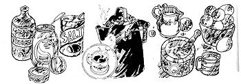

"After thirty," says the proverb, "you're either a fool or your own physician." Maybe before thirty, too especially if you live in an isolated spot and/or have a big, bump of independence. Of course. you're a bigger fool still if you meddle with a serious or persistent condition but both you and your overworked doctor will be better off if you can prevent or cure your own minor ills as Marj Watkins began pointing out in MOTHER NO. 28. Here's another installment of the health hints that work for her family.
TO INHIBIT CONCEPTION: Raspberry leaf and borage teas are recommended by tradition. Also, it's known that primitive mothers-northern Eskimos, for example-who breast feed babies for two or more years have a lower fertility rate or are sterile during the nursing period. Don't count on such protection for yourself, however, unless you're an Eskimo or Hunzakit!. The most modern birth control method the pill-is far more certain but does have its drawbacks. In particular, it's reported to rob women's bodies of vitamin B6, causing various minor symptoms: halitosis, burning feet, vaginal irritation, headaches, hair loss, insomnia, nervous disorders, visual disturbances, and constipation. Some really serious conditions are also connected with lack of B6: anemia, diabetes, high blood cholesterol, cystic fibrosis, pancreatitis, cataracts, and gallstones. Anyone who suffers from such problems might do well to increase consumption of natural sources of B6: liver, eggs, wheat germ, food yeast (one teaspoonful daily sprinkled on cereal, in soup, or in fruit or vegetable juice), rice polish, brown rice, and yogurt. If you prefer to avoid the pill, consult your doctor or public health service about the many other forms of contraceptives that are available.
TO PROMOTE CONCEPTION: Eat whole-grain breads and cereals, slow cooked. Use corn germ oil and soy oil on salads and in cooking (keep the temperature below 375° F). Take vitamin E d-alpha-tocopherol, 100 units daily. Use the rhythm system backwards: Copulate during the most fertile period. During pregnancy, get plenty of exercise in fresh air. Think happy thoughts. Hear gentle music, but avoid hard rock even plants turn away from it and cease to grow.
NAUSEA: This problem usually strikes in the morning. Keep a few crackers and/or dried apricots by the bed to chew before rising. Take vitamins, including at least 5 milligrams of vitamin B6 daily. Don't overeat during pregnancy, but don't let your stomach get entirely empty. Carry a packet of sunflower seeds to nibble on. Share them around. Nobody will snicker you might even start a style.
CONSTIPATION: Fast a day or two on fruit juices, herb teas, and an occasional dried fruit. One or two mornings a week have a fruit breakfast of apples, oranges, pears, grapefruit, pineapple, or any combination you enjoy, with berries in season. Drizzle a little honey over the diced goodies delicious! A mild, wholesome laxative: one quarter teaspoon magnesium oxide in a glass of fruit juice.
TO PREVENT OR COMBAT HIGH BLOOD PRESSURE: Eat greens-raw in salads and as cooked vegetables-for their potassium. Eat liver two or three times weekly, and whole grains and nuts every day. Use rice polish, whole wheat, rye, oat, and millet flours in baking. Take a papaya enzyme tablet (available at health food stores) with each meal for efficient digestion.
THREATENED MISCARRIAGE: Raspberry leaf tea contains a hormone inhibitor that slows down overactive glands and promotes an easy delivery at the right time. Drink one cupful twice daily. The same brew also gives you vitamins A, B, C, E, and G, plus calcium, phosphorus, and iron. Eat protein at every meal and snack also creamed cottage cheese and many fresh fruits and vegetable` (Cranberry orange relish: whole, fresh cranberries and unpeeled orange chopped, mixed, and sweetened with honey. Chopped walnuts can be added.) Soy oil can be used in salad dressing to provide vitamin E. Avoid sex if you get cramps, and in any case at the times when you would normally be having a menstrual period.
TO PREVENT TOXEMIA: This most feared pregnancy disaster-one that can cost you the baby and make you very sick-is associated with vitamin B6 deficiency. Before conception and while you're carrying a child, eat all the good, high-nourishment foods and avoid sugar, coffee, strong China tea, and white flour products. Enrich your diet with kelp, bladder wrack. dulse, and seafood for the 67 different minerals needed by the body. Take 25 milligrams of vitamin B6 daily if you have been using birth control pills or if your doctor warns you that you are in danger of toxemia.
SKIN PROBLEMS ACNE OR PIMPLES:
The cleaner than clean. Wash your hands and face twice daily with pure soap, warm water, and a soft cloth (pat, don't rub). Rinse by splashing on clear, cool water. Otherwise, keep your hands away from your face. Eat whole-grain cereals and breads, "an apple a day", peaches, fresh parsley, watercress, sorrel, collard greens, and green or red bell peppers. Also steamed spinach, baked yams, dried apricots, cantaloupe, papaya, persimmons, and grated carrot and raisin salad. Also poached or broiled swordfish, lamb, beef or chicken liver, and poached or boiled eggs. Drink milk three times a day and enjoy cottage cheese or yogurt. Sunflower seeds are good for snacks. Don't eat candy, syrup, cake (especially frosted), soft drinks, chocolate, or other hard fats, except for a little butter. Take daily 50,000 units of vitamin A, 100 units of vitamin E and a B-complex preparation containing BI, B2, B6, B12, pantothenic acid, para-aminobenzoic acid, choline, and inositol.
ECZEMA: Follow the diet suggested under ACNE OR PIMPLES, with lots of green salads, sunflower seeds, whole oranges, and fresh or dried apricots. Take the vitamins listed in that section, with extra B6 and E. According to Adelle Davis, vitamin B6 applied to the skin will relieve itching almost instantly. You can mash the tablets finely and dissolve them in honey and peach kernel oil lotion, which is healing in itself.
HIVES OR INSECT BITES: Wash the skin with cool water and apply honey and peach kernel oil lotion to relieve itching. A friend of ours-a hospital administrator successfully treated severe hives with mashed-up antihistamine tablets combined with cold cream. Some antihistamines, however, can increase the skin's sensitivity to sun and cause even worse hives. I'd rather stick to my own method.
CHAPPED SKIN, SORE LIPS, CRACKS AT CORNERS OF MOUTH:
Eat wheat germ, liver, and food yeast for their pantothenic acid and take a 100milligram tablet of the same vitamin each morning. A delicious natural lotion for chapped lips: Mix a drop of honey with one-half to one teaspoon of apricot kernel oil with the fingertips. Apply it to the lips and rub them together. Try not to lick off the medicine!
SUNBURN: Bathe the affected skin gently with vinegar water, a wet tea bag, or peppermint tea. This cools the skin, deals with bacteria, and starts the healing process. Replace the natural oil with apricot or peach kernel oil lotion. Paraaminobenzamine lotion cools inflammation, relieves itching, and promotes healing.
POISON IVY, OAK, OR SUMAC: Know the toxic plants and avoid them. Remember the old warning rhyme, "Shiny leaves three, don't touch it, flee." The poison sumac of the northeastern U.S. is a swamp-loving shrub or tree resembling the common stag horn sumac but with untoothed leaves and white berries. While camping in Maine (York County, near the coast) I had a very unpleasant experience with a plant which a local Girl Scout leader identified-too late as poison mercury. (I used a leaf for toilet paper and it took weeks to get rid of the blisters.) The culprit doesn't look a bit like any of the other toxic species: It's a shrub two to three feet high, somewhat resembling the elderberry except that the bush is smaller and twiggier, the wood firmer, and the leaves shorter and fatter. They grow three or five sometimes seven to a spray and are about the same length as poison sumac leaves, but lighter and wider. The foliage is matte, not shiny, and a nice inviting apple green in color. The plant grows along railroad tracks, at the edges of woods, and by roads through wooded areas. (None of the nature guides I've consulted list poison mercury. Can any Maine botanists furnish more information?-MOTHER.) If the worst happens, take Euell Gibbons' advice and apply the juice of jewelweed immediately after exposure. Or scrub the skin immediately with soap and cold water. (Beware of hot water! It spreads the rash.) Then apply cool soda packs, followed by calamine lotion to relieve itching. Vitamin C-1,000 milligrams with a glass of milk every four hours-will help combat the toxin from inside.
HANGNAILS: Gently apply apricot kernel oil to the skin around the nails. Eat more protein, vitamin C, and very green leaves.
HORIZONTAL NAIL RIDGES OR WAVES: These are often coincidental with menstrual difficulties and indicate a need for more vitamins A and E.
VERTICAL NAIL RIDGES: A warning of anemia (see MOTHER N0. 29) or a sign that you're using strong detergents without rubber gloves.
DANDRUFF: If the condition arises from dry skin, add liver, food yeast, and wheat germ to your diet, cook with natural oils and-for baking mix 1/8 cup soy flour with each 7/8 cup of whole wheat, rye, or buckwheat flour.
INFECTIOUS DANDRUFF: Wash and brush your hair well and often. Make your own dandruff-remover shampoo of one part Listerine to one part shampoo, mild detergent, or dissolved soap-cake leftovers.
|
 |
|
|